We have thus far explored datasets on US bills, newspaper articles, government expenditure spreadsheets, and Homeland Security statistics, and we've performed independent analyses on all these different sources to better understand how the United States has reacted to the hot topic of Immigration.
After collecting and pre-processing these data sources we were interested in beginning a basic exploration through time. The goal of this exploration was to point out specific years and trends across our data sets, and also to bring to the table ideas for further discussion and presentation.
We concluded that the best way to complement the other immigration team’s work was to find the years that have been influential in shaping and changing the United States’ stance on immigration and foreigners. We each separately constructed scripts to find important years to analyze our separate datasets and came up with several interesting insights and correlations.
Finally, we extensively analyzed methods of clustering and bagan vizualizing our conclusions using D3.js, a data vizualization library, written in Javascript.
During the last phase we had already written a script - source code here - to acquire newspaper articles referencing “immigration” in either their headlines or contents. We stored approximately 30000 articles from 1850 to 2005 in csv format. We plotted the frequency of newspaper articles mentioning “immigration” across different respective years, and the followings graphs are a sample of these visualizations.

 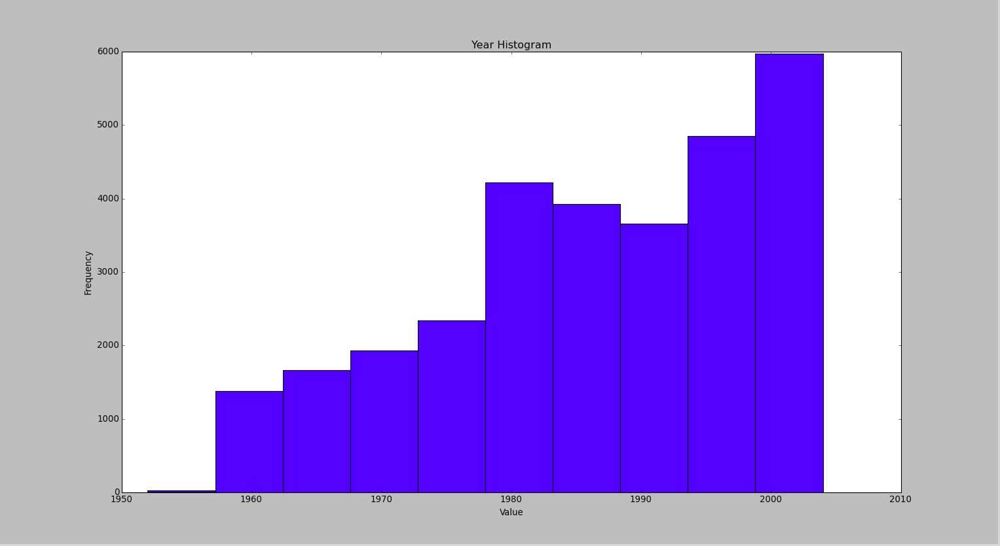
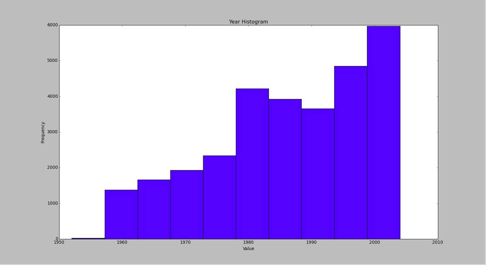
While the overall trend across years is a general increase in articles mentioning immigration, by zooming into specific ranges of years, certain interesting peaks are revealed.
We further divided years from 1850 -2005 into different bins and used Indico’s API to extract the important keywords from those bins, as shown in the figures that follow.
 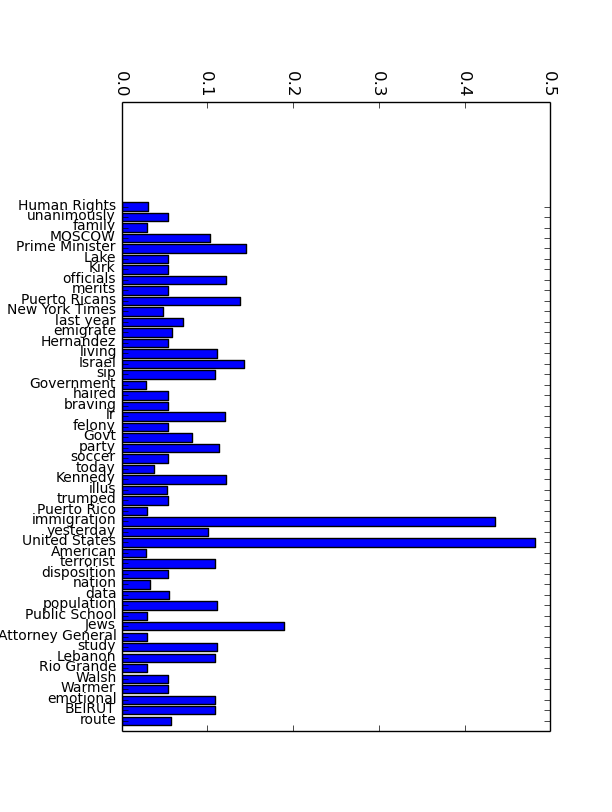
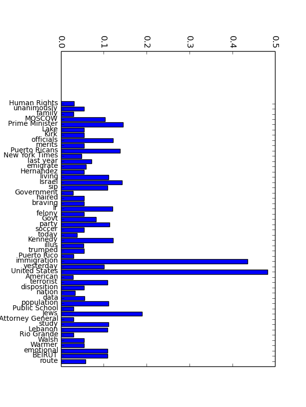
Looking carefully in the figures above, none of the results appear to be very interesting. After searching through all the top words of around 10 - 20 bins from 1850 to 2002, we found that the majority of the keywords were too general. We decided we needed to explore a far smaller range of years at any given time, and only for years where we have already seen there should be more interesting data. During the next phase we plan to explore these key words more deeply.
We further implemented a visualization of a word cloud using D3.js. The following is a picture of a world cloud for a bin of approximately 10 years.
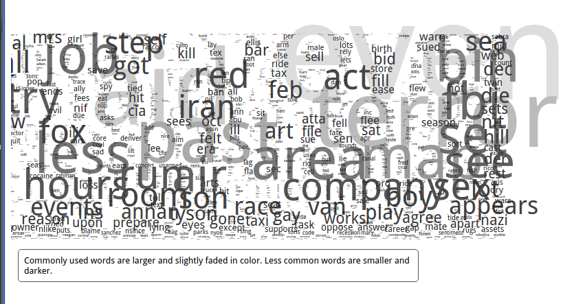Such words are, once again, too general and we cannot extract important insights from them.
In order to better find relationships among years, we choose to perform document clustering. We used TF-IDF to generate a document feature vector matrix, which our clustering algorithms could then analyze and group.
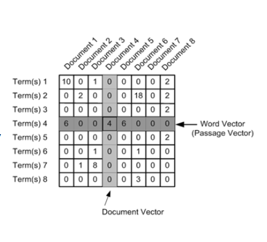We decided to focus on K-means first. After tuning the parameters, the result of clustering articles from 1997 - 2002, is shown as follows.
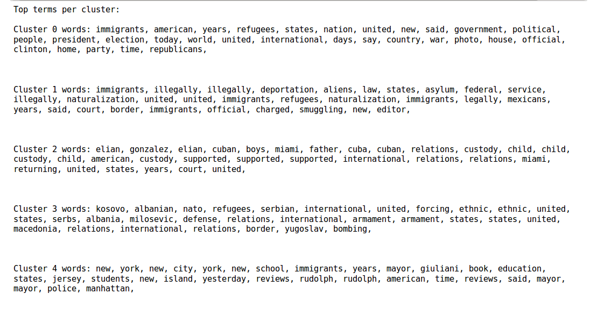The five clusters are all very interesting and show different trends, and the key words show consistent ideas. Finally, we plot the year distribution of these clusters, as one can see below.
 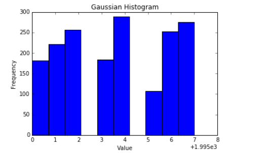
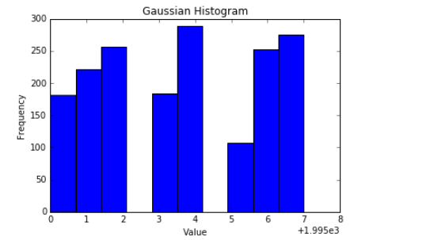

 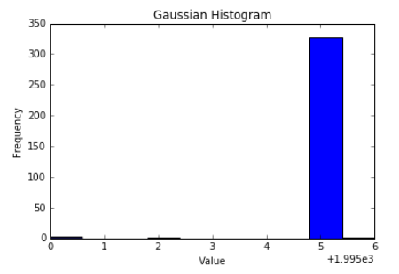
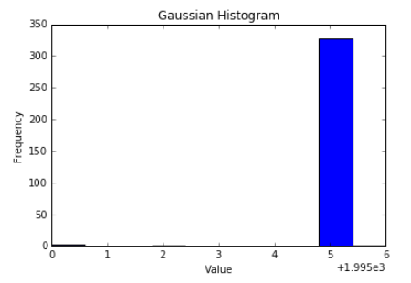
Certain clusters center around specific years and some others are a bit more general. We plan on further exploring the more localized clusters.
In order to address all learning goals for this project, some of us started looking into alternative clustering algorithms. We got a lot of information as to how to implement both K means and Hierarchical clustering algorithms and example code of implementing the later can be found here.
During this phase of our project we also began to design our final visualizations in a way that would best tell our story. To satisfy all of our learning goals, we wanted to ensure that our visualizations provided different ways of looking at our data (e.g. from a time-based perspective, or from a keyword or cluster perspective).
This is an example of a potential basic flow from a large scale perspective of our data, down to a much smaller and cluster-specific view.

We plan on giving users and visitors the ability to explore any part of the timeline, but we also intend to include pointers to years that we have identified as significant, and provide more guidance and explanation to users so that they can fully understand the story of immigration in the United States.
Below is a visualization we plan on using to explore the clustering and spread of various keywords in bills and articles across years (currently containing sample data).
Up until this point, we have managed to create an API that successfully pulls information on all bills and votes present in Congresses 104 to 107, i.e. 1994 to 2002. When trying to access congresses of most recent years or years that prior to 2002, we realized that the json architecture significantly differed and there were too many exceptions to take care of in our API that we decided to zoom into the afore-mentioned years.
We collected all bills relevant to immigration and performed a variety of different methods with our newly-gained knowledge from this mid-project phase. We implemented clustering and looked deeply into tf-idf vectorizing to be able to segment our immigration-centered bills with years and specific bills that we considered important.
A topic that troubled us for quite some time was including the correct amount of information in our analysis. Several bills had been revisited multiple times and we wanted to make sure that when tf idf and other grouping, i.e. clustering, methods were applied on the data set, no specific sections or bills content were diminished in their importance because of their overwhelming presence due to multiple number of re-voting procedures. As a result, we decide to keep the “most recent” version of all bills present in our dataset.
As one can see below, we have included a depiction of the clustering of the unique bills related to immigration as extracted through our API from Congresses 104 to 107. Certain evident groupings can be seen.

After we completed the K-Means clustering operations, we were very interested in exploring different clustering algorithms and looked into the implementation of hierarchical clustering algorithm from scratch as alluded above. Finally, we decided on looking at the frequency of the bills through time and understanding the most important words/topics that rose during a peak year that coincided with that from the news dataset.
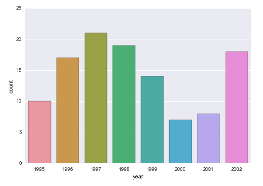For the final portion of the project we are looking into further understanding the connections between our different data sources and their link to immigration, and developing compelling visualizations that represent the end result to our viewers.
We've embarked on a mission to take a critical look at the way the United States treats those who cross its borders (whether that be refugees, undocumented immigrants, or legal permanent residents), and how those people react and live in the United States. We will be comparing data that we find representative of the government and society's treatment of these people to the statistics and stories that best represent their lives in the United States.
We decided to explore the years of legislation in Congress. We were very interested in looking at both chambers; the House of Representatives and the Senate, and analyzing the content of the proposed bills on the topic of Immigration and Foreign Affairs. We collected information on the success of those bills; i.e. whether they passed or not, the support they received, i.e. parties sponsoring and voting for them, and, finally, their detailed content and clauses. Currently we have collected such information for the 108th Congress (2003-2004). We are going to further retrieve data for Congresses spanning a range of 30 years, documenting how significant historic events, such as 9/11, affected the political scene in the US.
In order to do so, we got the congress data in JSON format from DataGov and parsed the available vote, bill and amendment documents to extract the nessecary information for the category of interest. Revisions of bills were present, as well as amendments containing bills related to our query parameter. We constructed an API Processor Class that takes as an input a congress directory path and a query parameter and outputs a csv file containing all the bill and amendment information for the specified congress session and parameter. The Processor initializes a dictionary with a variety of keys, i.e. “isAmendment”, “bill_long_text” and provides multiple API methods, including find_chamber_count(), read_chamber_data(), get_bill_info() and arrange_dict().
For instance, in the get_bill_info API method shown below, we are passing as an input vote_index (the vote document number for a given congress, year and chamber session) and load the relevant JSON vote document. After we extract the relevant bill type and number we loop through each bill type and collect the data we care about that populates the output of the method in the form of an array.

For more documentation on the API, please look over at our IPython Notebook here.
We've gathered data from the Department of Homeland Security to investigate the time and money the United States spends on allowing or denying people access into the country. The DHS has data tables for a range of subjects, a few of which have data reaching back to 1820. For our project however, we will be exploring no more than twenty or thirty years into the past, where the majority of their data sets are complete. The DHS collects various data on immigration and entry into the United States, as well as the various actions that border patrol and their investigative service performs. Below we have more detail on the specific data we have begun to use.
Data sets we will be using include:
Actions and ‘accomplishments’ of the Dept. of Homeland Security: This includes removals and returns of persons violating border control, seizures and searches of smuggled contraband.
Prosecutions, Convictions, and Dismissals of border violation cases: Each prosecution is time and money spent by the U.S. Government, and indicates a more xenophobic trend.
Refugee, Legal Permanent Resident Status, and Naturalization: Counts of petitions filed, dismissed, and accepted represent an investment in letting people enter the country.
Budget for the Department of Homeland Security: As a measure of how much the government is invested in the DHS.
Cleaning, organizing, and compiling these different datasets was quite a project, but with this data unified we can easily create very interesting comparisons. Below we’ve compared the number of refugees entering the country, number of persons obtaining Legal Permanent Resident Status, and number of persons apprehended by the DHS per year. Simply being able to see that apprehensions and and LPR’s are on the same order of magnitude already shows the power of this data.
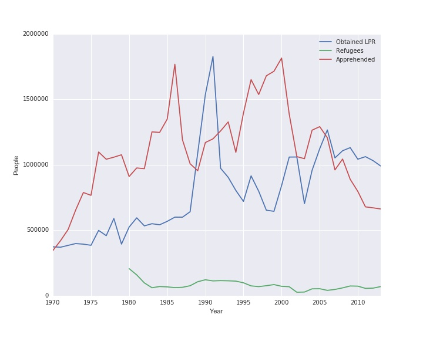Moving into the next stages of the project, we will also be exploring many of these categories by country of origin, to gain a richer understanding of the trends in immigration, and attempting to find correlations between this data and the other datasets we have collected.
During this part of the project, we tried to analyze society’s general impression of immigration. We chose to explore a news source, the New York Times, as the first step in comparing the past and present public and media’s impression of immigration. Newspaper media, unlike twitter data, has existed for longer than the past 10 years and so is more durable than internet social media.
We went to the NYT API website and registered for their article search api key which seems to be the most relevant api function call. We registered around 10 API keys and download article information from 1850 - 2006, all with the keyword immigration (which selects articles if the keyword shows up in the headline or the body of the article). This returns a JSON file, which we have to parse through to extract and gather data, storing in a csv file. After finally gathering all the data, we wrote a script to allow users to give an arbitrary bin number, and then the program will automatically divide all the data across the years into those bins and extract the most important keywords and their frequencies based on each bin unit, after which it stores them. I used sklearn’s TF-IDF buit-in functions to handle this extraction.
As a next step, we are going to visualize this data with a word cloud correlated to different years. The sample graph could look something like this.